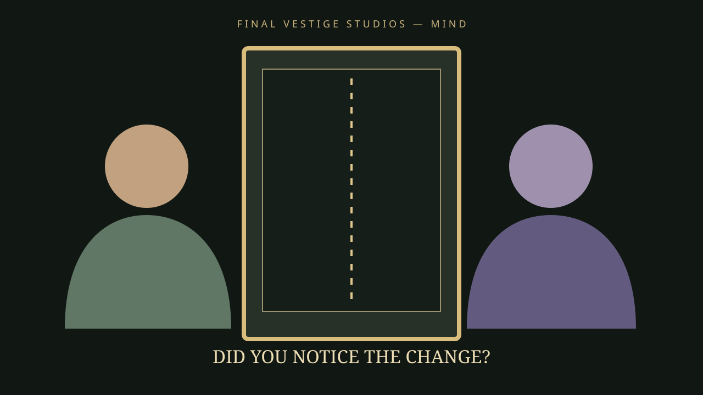

Optional 42-second film concept · Not encoded

Read the full timed narration and caption concept
0–7 seconds: You give directions. A door passes. The stranger in front of you changes.
7–14 seconds: In a 1998 field study, many pedestrians did not spot the switch. This was not hypnosis.
14–21 seconds: Seeing an object now isn't the same as remembering every detail from before.
21–28 seconds: Some meditation research examines attention, but does not validate a specific audio course.
28–35 seconds: Start with a free twelve-minute exercise and notice what you actually do.
35–42 seconds: Compare formats, the evidence limits, actual price and refund terms before deciding.
Caption asset: film.vtt. Static poster: poster.svg. Encoded video file does not exist. Production and browser QA are not complete; when produced it must have on-demand controls, no autoplay, captions, a transcript and a usable no-JavaScript page.
Tools under review · Unpublished independent buyer guide
A twelve-minute meditation recording is not a twelve-minute scientific result.
In a carefully staged 1998 field study, some pedestrians did not notice that their conversational partner had changed behind a passing door. It is an arresting finding about attention. It does not establish that an audio product can reverse change blindness, fix memory or create a new state of consciousness.
Maybe you are simply looking for a meditation routine that fits into a busy day. Preferring a library of short guided sessions over silence is a reasonable choice. The right buying question is whether the content, format, price and policies are worthwhile to you—not whether a dramatic perception study proves the seller's claims.
Start with a free demonstration
Try twelve minutes without purchasing anything. Set a timer, pick a neutral focus or modest task, notice when your attention wanders, and return without judging yourself. Afterwards write down what you liked and disliked about the format. This is a preference and observation exercise, not a cognitive treatment, standardized test or proof of benefit.
What the exact Zen12 seller page describes
The public site describes twelve levels with twelve-minute MP3 sessions available in four styles: guided meditation, relaxation music, nature sounds and white noise. Its Premium package describes the full twelve levels and 48 MP3 files. Its separate Beginner and Advanced packages describe six levels and 24 MP3s each. The seller mentions user guides, support and a one-year money-back promise. These are seller descriptions, subject to actual checkout-specific terms and verification.
The seller also promotes a claim that twelve minutes of its audio can supply the benefits of an hour of meditation, along with wide-ranging mental or health benefits. Independent change-blindness experiments and a comparison between meditators and non-meditators do not establish those outcomes for Zen12. Final Vestige has not purchased, listened to or personally tested this product.
Five questions worth asking before buying
- Which exact tier? The full bundle is different from either six-level subset.
- What is the actual referred checkout price? Public promotions change; an authorized Final Vestige referral price has not been authenticated, so this guide intentionally states no selling price.
- Which sound style would you actually use? Music, narration, nature and white noise are not equivalent scientific guarantees; you may prefer one.
- What are the refund conditions? The public seller describes a one-year policy. Inspect exact terms, exceptions, support channel and your applicable region before relying on it.
- What has been independently demonstrated? A convenient listening library is a product format. Claims about medical, cognitive, financial or dramatic accelerated-meditation effects require product-specific support not established here.
The worthwhile free alternative
The existing 52-page Seven Day Focus Fieldbook offers a twelve-minute routine and an evidence checklist for meditation audio. It remains free and uses Final Vestige's one established Jetpack/Dispatch opt-in. This guide does not duplicate that form or require an email before reading.
Zen12 offer decision
Our independent buying guide is available, but a Final Vestige merchant referral is not. Named partner acceptance, product and social-channel permissions, issued tracking URL and actual checkout/returns evidence must be verified first.
If an authorized purchase link is later added here, Final Vestige may earn a commission if you buy through it, at no additional cost to you. There is no active earning or seller purchase link on this page.
Intentionally disabled. Seller source reference (not a hyperlink): zen12.com. No purchase, referred price or affiliate acceptance has been verified.
Independent sources and limits
Simons and Levin's 1998 pedestrian study and Hodgins and Adair's 2010 meditation/attention comparison are studies about people and tasks, not Zen12 efficacy. FTC endorsement guidance and FTC health advertising guidance underpin the separation of seller assertions from independently supported benefits.